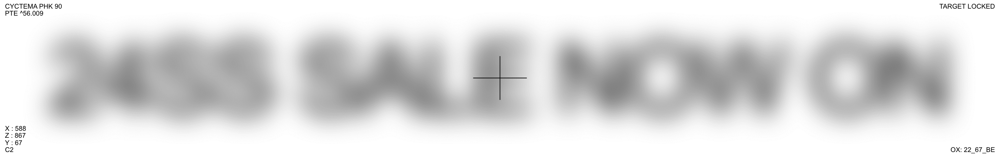

큰 할인율 폭과 재고소진시의 특성을 활용해 질리지 않도록 컬러를 최소화하고 재미 요소를 더함. After Effect 사용. 24SS 시즌오프.
큰 할인율 폭과 재고소진시의 특성을 활용해 질리지 않도록 컬러를 최소화하고 재미 요소를 더함. After Effect 사용. 24SS 시즌오프.
타이핑 효과를 활용한 디자인. 25년 7월 할인코드 25SUMMER.

GOODBYE라는 할인코드 컨셉을 활용. After Effect 사용. 25년 8월 할인코드 GOODBYESUMMER.
위와 동일하게 FLASH라는 키워드 활용. Premiere Pro 사용. 25년 3월 할인코드 FLASH25.

벚꽃이 떨어지는 모습을 형상화. Premiere Pro 사용. 25년 3월 할인코드 BLOSSOM25.
밸런타인 컨셉에 맞는 컬러감과 텍스처를 활용한 디자인. 25년 2월 할인코드 SWEET25.

픽셀 변환 효과를 활용한 디자인. 25년 9월 할인코드 CHUSEOK25
PRIVATE 키워드의 뉘앙스를 해석. 타이포의 배치 변화. 25년 5월 할인코드 PRIVATE25.
당시 인기가 많았던 시즌오프 적용 브랜드 라인업을 활용. 24년 미드시즌오프 배너.